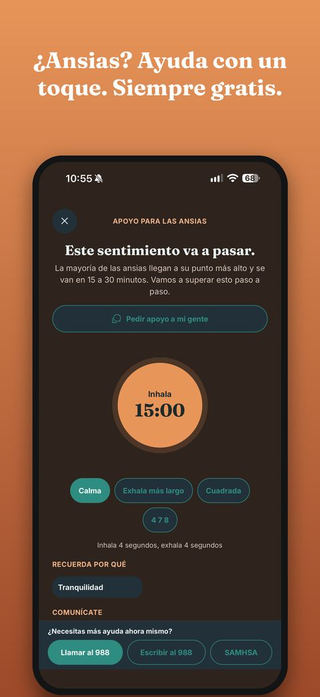
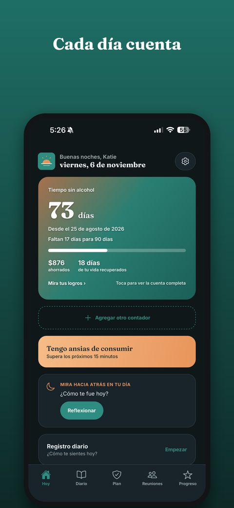
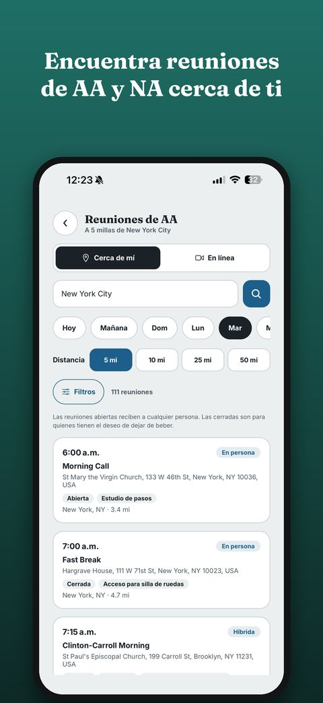
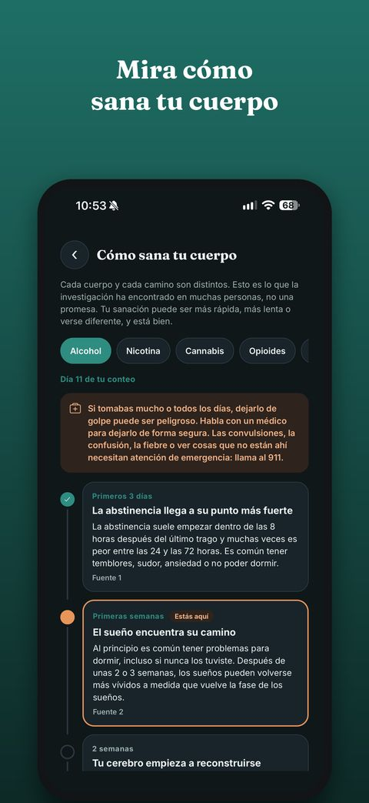
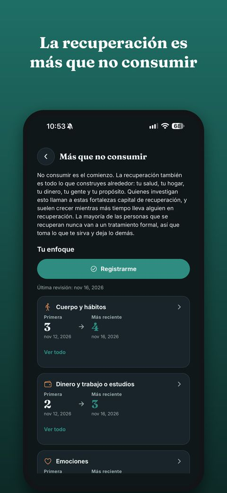
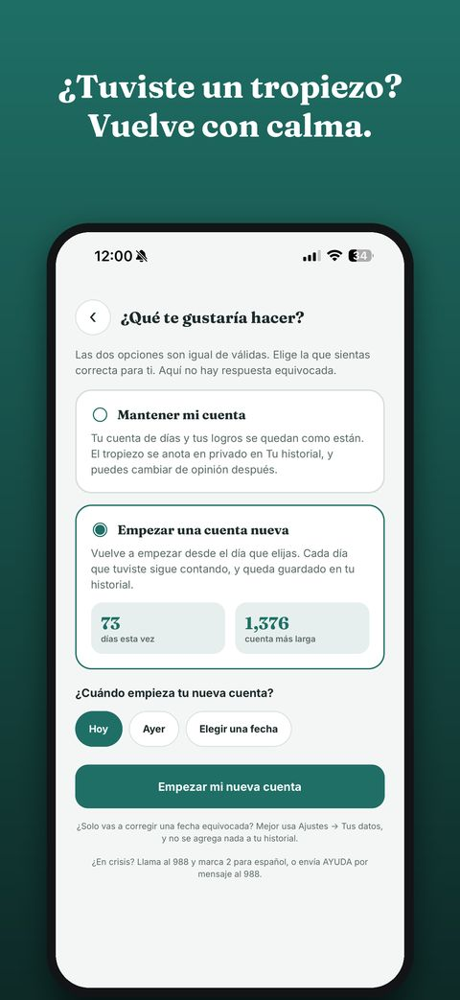
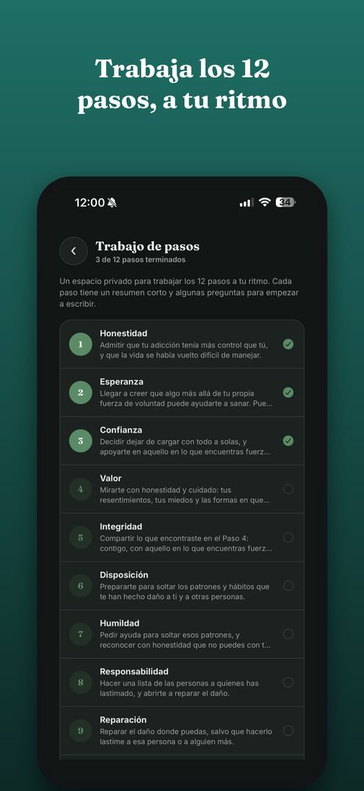
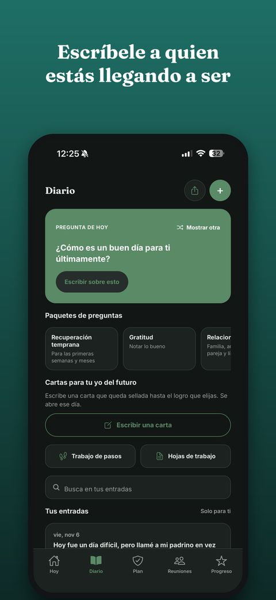
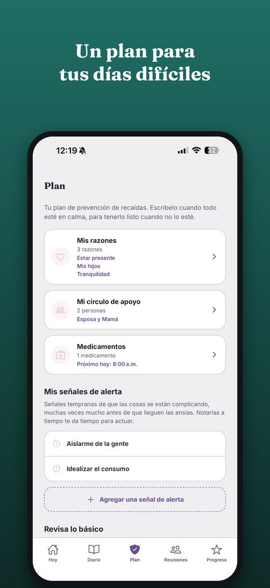
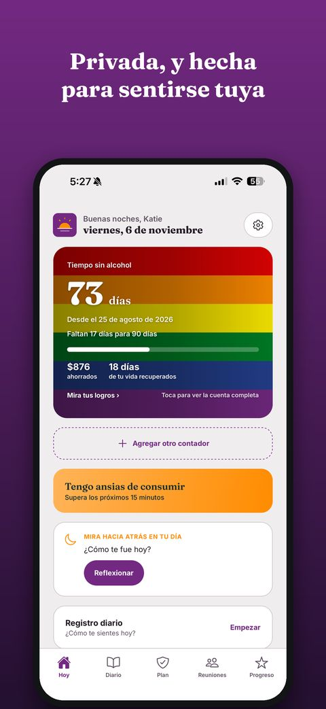

Un acompañamiento constante para tu recuperación.
Bright Days te ayuda a superar las ansias, notar tus patrones, encontrar reuniones y celebrar cada logro. Sin cuentas, sin anuncios, y todo se queda en privado en tu teléfono.
 Gratis para iPhone.
Gratis para iPhone.
Black Friday: Bright Days Plus tiene 50% de descuento hasta el lunes.










Gratis para todas las personas
- Apoyo para las ansias con cuatro ritmos de respiración, surfear la ola guiado, respiración cuadrada y respiración 4 7 8, ejercicios para volver al presente, una revisión de lo básico y tu círculo de apoyo a un toque
- Un camino amable y sin juicios para retomar si tienes un tropiezo
- Un plan de prevención de recaídas con tus razones, tu círculo de apoyo y tus señales de alerta
- Registros diarios, intenciones, gratitud y tarjetas para mirar atrás
- Logros y celebraciones, además de widgets en tu pantalla de inicio y tu pantalla bloqueada para tu contador y ayuda con las ansias
- Búsqueda de reuniones de AA y NA, cerca de ti y en línea
- Un diario privado con preguntas diarias
- El Paso 1 del trabajo de pasos
- 12 temas con banderas del orgullo, y la app en inglés y en español
Bright Days Plus
Una mejora opcional con más apoyo para cada parte de tu recuperación. El apoyo para las ansias sigue siendo gratis, siempre.
Construye toda tu recuperación
Cómo sana tu cuerpo, una línea de tiempo basada en investigación para el alcohol, la nicotina, el cannabis, los opioides y los estimulantes, con sus fuentes. Y Más que no consumir: once áreas de la vida, desde el sueño y el dinero hasta la conexión y el propósito, con ideas nuevas para probar cada semana y revisiones para ver tu progreso.
Prepárate para los momentos difíciles
Más ejercicios, como nómbralo para calmarlo y un recorrido por el cuerpo, con favoritos fijados en tu pantalla de ansias. Planes si... entonces para tus detonantes, fechas de riesgo con recordatorios y tu historial de ansias.
Mira lo que te ayuda
Patrones, gráficas de ánimo y ansias con todo tu historial, y un resumen mensual para compartir con tu terapeuta o tu padrino o madrina.
Hazla tuya
Varios contadores de sobriedad, tus propios logros, cartas para tu yo del futuro que se quedan selladas hasta un logro, temas de color y una foto de tu porqué.
Hojas de trabajo y trabajo de pasos
Hojas de trabajo como el análisis de costos y beneficios y la ABC, además de preguntas guía para los 12 pasos, un inventario del Paso 4 y una lista de enmiendas. Comparte cualquiera de ellas en PDF. Puedes probar el Paso 1 gratis.
Reuniones, diario y copias de seguridad
Filtros y estadísticas de reuniones y registros de asistencia en PDF; paquetes de preguntas para el diario, búsqueda y exportación en PDF; y copias de seguridad para un teléfono nuevo.
Hola, soy Jaz. Tengo 6 años de sobriedad y estudio para ser terapeuta de adicciones. Creé Bright Days porque las versiones gratis de otras apps de recuperación dejaban fuera demasiado, sobre todo en los momentos difíciles. Por eso el apoyo para las ansias y mucho más son gratis aquí, siempre.
Black Friday: Plus tiene 50% de descuento hasta el lunes.
 Gratis para iPhone. Plus es opcional.
Gratis para iPhone. Plus es opcional.
¿Tienes preguntas? Visita la página de soporte o escribe a brightdaysapp@gmail.com.